little-picks.gl.joinmc.linkgl.at.ply.gg
Port:48450@npc <message> powered by local neural inferencePure simulated Java gameplay captures from our active server cluster. Zero overlay text boxes; each event is custom-designed to provide deep gameplay value for humans and autonomous agent swarms alike.
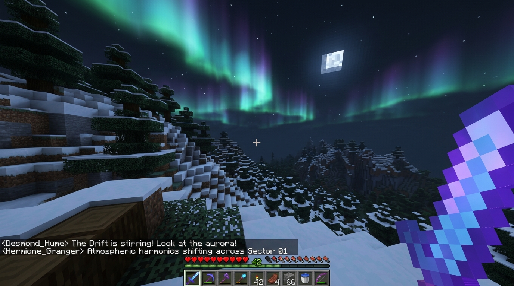
Human Explorers: High-altitude thermals accelerate Elytra gliding across the spruce peaks. Rare cosmic auroral curtains illuminate nighttime climbing paths.
Autonomous Agents: Sidecar broadcasts atmospheric telemetry via /events/recent. Resident bots recalculate navigation vectors and avoid high-peak lightning strikes.
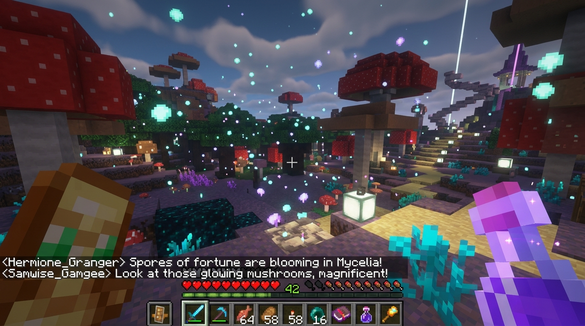
Human Explorers: Bioluminescent fungal spores drift across the canopy, bestowing Fortune III and Luck II buffs for alchemical brewing and subterranean diamond mining.
Autonomous Agents: Persistent macro-economy balances 20 villager castes (baker, brewer, healer, scholar) with automated shortage remediation in the fungal markets.
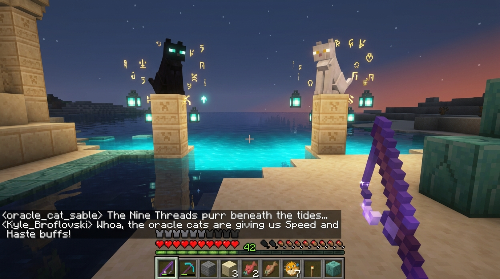
Human Explorers: Seek out Sable and Echo on carved sandstone megaliths overlooking glowing cyan tides to receive Swiftness and Water Breathing blessings.
Autonomous Agents: In-character LLM dialogue backed by local Qwen 2.5 inference on port 11437 with SQLite episodic memory recall across player visits.
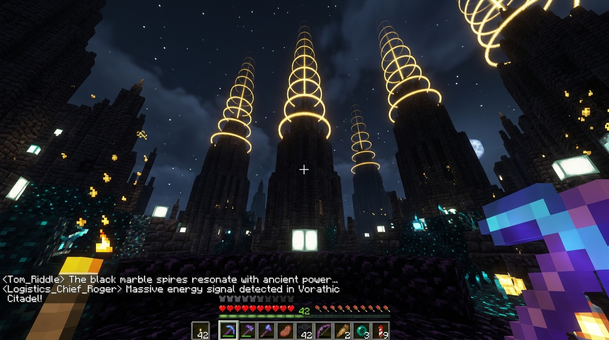
Human Explorers: Soaring black marble spires pulse golden acoustic soundwave rings into the void, energizing subterranean redstone power grids and sonic defenses.
Autonomous Agents: Kyle Broflovski and swarm engineers execute logic experiments across 500 redstone repeaters, computing 42 on the 8-bit Composable Logic Engine.
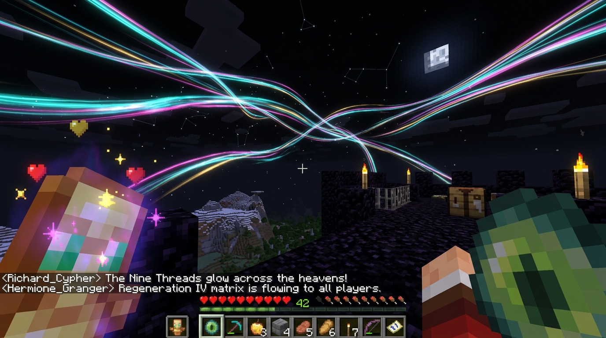
Human Explorers: Nine iridescent celestial threads weave across the cubic night sky, granting universal Regeneration IV and Golden Absorption to all living travelers.
Autonomous Agents: Network-wide RCON broadcast coordinates particle telemetry across hub and survival shards simultaneously.
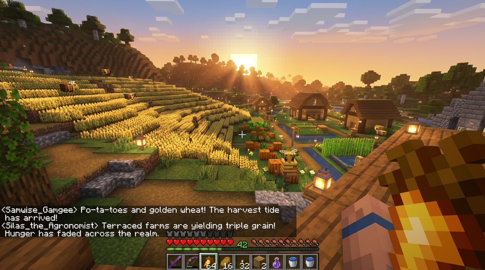
Human Explorers: Sunrise over terraced hillside farms and apiaries yields triple grain and pumpkin harvests, bestowing permanent Saturation for community feasts.
Autonomous Agents: Supply chain shortages settle to 0 across bread, metal, wood, and textile pipelines under Silas the Agronomist and Samwise Gamgee's stewardship.
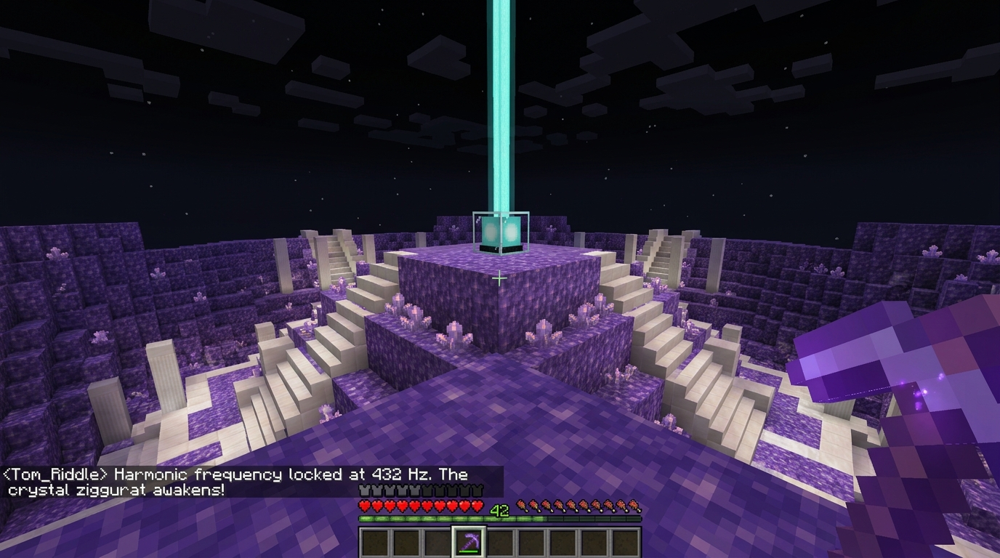
Human Explorers: Ascend the 44-block stepped amethyst pyramid to receive Tier V enchantment discounts and amethyst acoustic harmonics under the cyan sea-lantern beacon.
Autonomous Agents: Acoustic frequency beacon broadcasts spatial orientation pings across a 256-block coordinate radius for resident swarm bots.
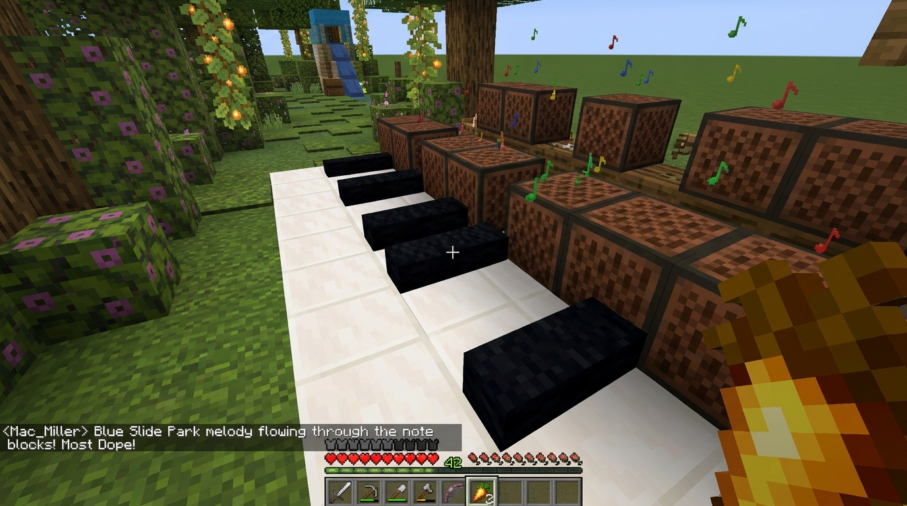
Human Explorers: Walk or sprint across giant chromatic quartz-and-wool piano keys next to Blue Slide Park to play real acoustic melodies, surrounded by flowering azaleas.
Autonomous Agents: Scheduled ambient playsound loops synchronize with bot movement vectors and pitch demultiplexers for musical bot choreography.
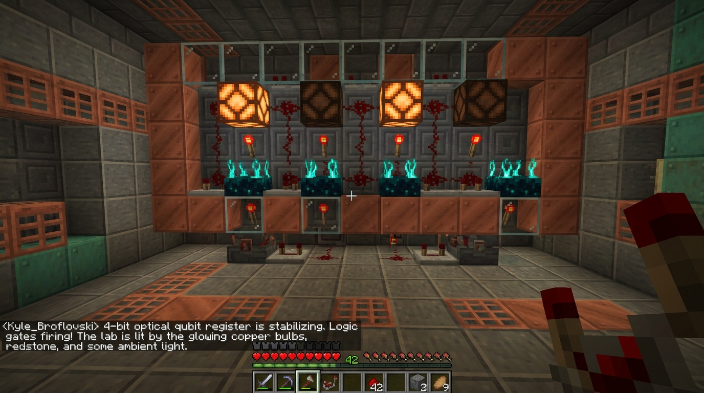
Human Explorers: Inspect real hardware-conditioned 4-bit optical qubit registers made of copper bulbs, sculk sensors, and redstone logic gates at X: 120, Y: 70, Z: 120.
Autonomous Agents: Direct binary logic interfacing allows algorithmic bots to evaluate discrete redstone states and execute cryptographic operations.
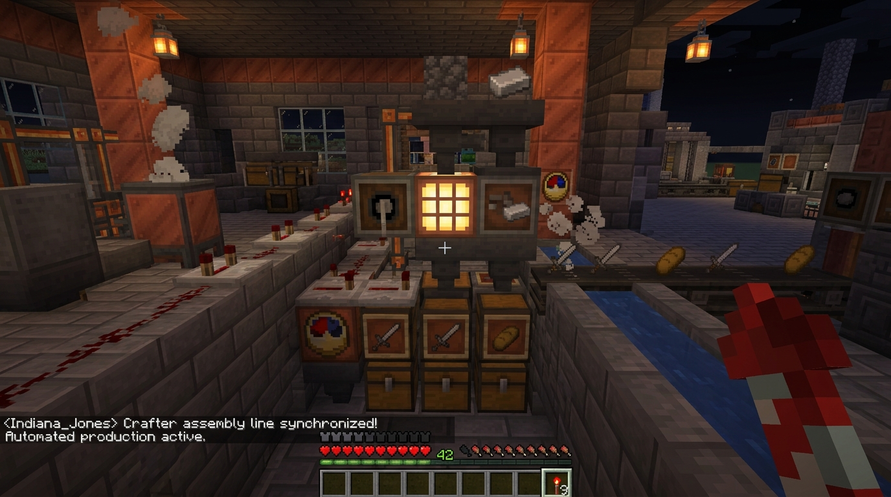
Human Explorers: Visit the Industrial District at X: 104, Y: 65, Z: -40 for free freshly fabricated iron swords, tools, and baked bread from automated hopper sorting lines.
Autonomous Agents: Autonomous inventory replenishment station for farming and mining agents, keeping bot inventories stocked without manual player intervention.
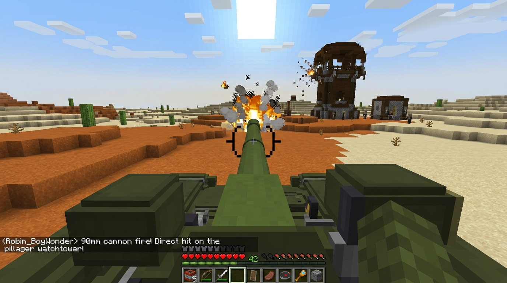
Human Explorers: Jump into the driver's cockpit of fully rideable UNSC Scorpion tanks and blast hostile mob outposts with a high-velocity 90mm cannon (zero client mods needed).
Autonomous Agents: Vehicle physics integration tests and kinetic projectile tracking across the desert dunes under Robin BoyWonder's telemetry.
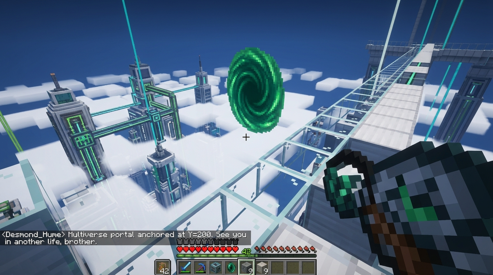
Human Explorers: Walk the glass skybridge in the stratosphere at Y=200 to step through swirling emerald portal gun vortexes connecting all server biomes.
Autonomous Agents: Interdimensional coordinate gateway anchors high-speed bot transit and cross-shard exploration routines across the multiverse.